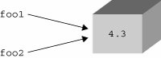
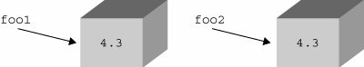

4.5. Standard Type Operators4.5.1. Object Value Comparison
Comparison operators are used to determine equality of two data values between members of the same type. These comparison operators are supported for all built-in types. Comparisons yield Boolean TRue or False values, based on the validity of the comparison expression. (If you are using Python prior to 2.3 when the Boolean type was introduced, you will see integer values 1 for TRue and 0 for False.) A list of Python's value comparison operators is given in Table 4.1.
Note that comparisons performed are those that are appropriate for each data type. In other words, numeric types will be compared according to numeric value in sign and magnitude, strings will compare lexicographically, etc. >>> 2 == 2 True >>> 2.46 <= 8.33 True >>> 5+4j >= 2-3j True >>> 'abc' == 'xyz' False >>> 'abc' > 'xyz' False >>> 'abc' < 'xyz' True >>> [3, 'abc'] == ['abc', 3] False >>> [3, 'abc'] == [3, 'abc'] True Also, unlike many other languages, multiple comparisons can be made on the same line, evaluated in left-to-right order: >>> 3 < 4 < 7 # same as ( 3 < 4 ) and ( 4 < 7 ) True >>> 4 > 3 == 3 # same as ( 4 > 3 ) and ( 3 == 3 ) True >>> 4 < 3 < 5 != 2 < 7 False We would like to note here that comparisons are strictly between object values, meaning that the comparisons are between the data values and not the actual data objects themselves. For the latter, we will defer to the object identity comparison operators described next. 4.5.2. Object Identity ComparisonIn addition to value comparisons, Python also supports the notion of directly comparing objects themselves. Objects can be assigned to other variables (by reference). Because each variable points to the same (shared) data object, any change effected through one variable will change the object and hence be reflected through all references to the same object. In order to understand this, you will have to think of variables as linking to objects now and be less concerned with the values themselves. Let us take a look at three examples. Example 1: foo1 and foo2 reference the same object foo1 = foo2 = 4.3 When you look at this statement from the value point of view, it appears that you are performing a multiple assignment and assigning the numeric value of 4.3 to both the foo1 and foo2 variables. This is true to a certain degree, but upon lifting the covers, you will find that a numeric object with the contents or value of 4.3 has been created. Then that object's reference is assigned to both foo1 and foo2, resulting in both foo1 and foo2 aliased to the same object. Figure 4-1 shows an object with two references. Figure 4-1. foo1 and foo2 reference the same object Example 2: foo1 and foo2 reference the same object foo1 = 4.3 foo2 = foo1 This example is very much like the first: A numeric object with value 4.3 is created, then assigned to one variable. When foo2 = foo1 occurs, foo2 is directed to the same object as foo1 since Python deals with objects by passing references. foo2 then becomes a new and additional reference for the original value. So both foo1 and foo2 now point to the same object. The same figure above applies here as well. Example 3: foo1 and foo2 reference different objects foo1 = 4.3 foo2 = 1.3 + 3.0 This example is different. First, a numeric object is created, then assigned to foo1. Then a second numeric object is created, and this time assigned to foo2. Although both objects are storing the exact same value, there are indeed two distinct objects in the system, with foo1 pointing to the first, and foo2 being a reference to the second. Figure 4-2 shows we now have two distinct objects even though both objects have the same value. Figure 4-2. foo1 and foo2 reference different objects Why did we choose to use boxes in our diagrams? Well, a good way to visualize this concept is to imagine a box (with contents inside) as an object. When a variable is assigned an object, that creates a "label" to stick on the box, indicating a reference has been made. Each time a new reference to the same object is made, another sticker is put on the box. When references are abandoned, then a label is removed. A box can be "recycled" only when all the labels have been peeled off the box. How does the system keep track of how many labels are on a box? Each object has associated with it a counter that tracks the total number of references that exist to that object. This number simply indicates how many variables are "pointing to" any particular object. This is the reference count that we introduced in Chapter 3, Sections 3.5.5- 3.5.7 Python provides the is and is not operators to test if a pair of variables do indeed refer to the same object. Performing a check such as a is b
is an equivalent expression to
id(a) == id(b)The object identity comparison operators all share the same precedence level and are presented in Table 4.2.
In the example below, we create a variable, then another that points to the same object. >>> a = [ 5, 'hat', -9.3] >>> b = a >>> a is b True >>> a is not b False >>> >>> b = 2.5e-5 >>> b 2.5e-005 >>> a [5, 'hat', -9.3] >>> a is b False >>> a is not b True Both the is and not identifiers are Python keywords. Core Note: Interning
4.5.3. BooleanExpressions may be linked together or negated using the Boolean logical operators and, or, and not, all of which are Python keywords. These Boolean operations are in highest-to-lowest order of precedence in Table 4.3. The not operator has the highest precedence and is immediately one level below all the comparison operators. The and and or operators follow, respectively.
>>> x, y = 3.1415926536, -1024 >>> x < 5.0 True >>> not (x < 5.0) False >>> (x < 5.0) or (y > 2.718281828) True >>> (x < 5.0) and (y > 2.718281828) False >>> not (x is y) True Earlier, we introduced the notion that Python supports multiple comparisons within one expression. These expressions have an implicit and operator joining them together. >>> 3 < 4 < 7 # same as "( 3 < 4 ) and ( 4 < 7 )"
True |